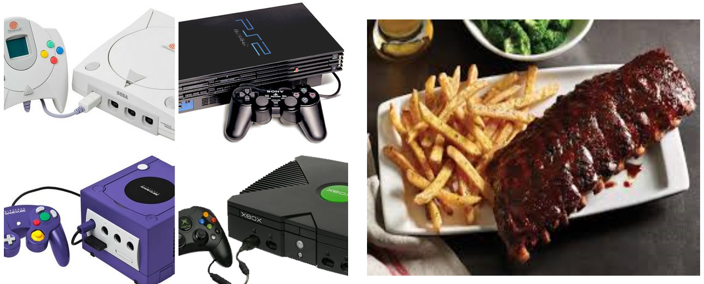

Welcome all 0 of my current guests! I am Shawn Luther, and I'm a Web Developer!
Welcome all 0 of my current guests! I am Shawn Luther, and I'm a Web Developer!
I was born and raised in Upper Darby Pennsylvania and have lived here my entire life. I've always had an interest in technology, software specifically, and would always wonder what was going on behind the scenes of video games, computers, and websites. One night I was so curious I went to Google and typed how to make a game in 15 minutes and would you know what happened next? I was directed to a YouTube link, and the name of the video that popped up was called how to make a game in 15 minutes! So to make a long story short, I watched this video, downloaded the files I was told to, and created my first program, which was basically a very generic looking CMD batch file executable that acted as a quiz game. It may not have looked, functioned, or even behaved competently, but it was the stepping stone to my endless curiosity as a young aspiring developer. When I'm not learning new coding skills, or taking on new ambitious projects, I'm a big foodie! I like to go out to eat when I can, and I'm obsessed with Applebees baby back ribs a little more than I care to explain. I also like to play video games, and I'm a proud owner of an original Playstation 2 that I've had since 2002 (she hasn't died on me yet!). When I'm not playing games, coding, or eating, I'm doing all three while hanging out with my friends. 